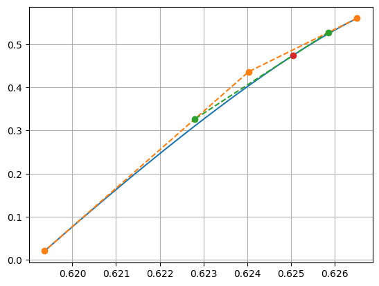
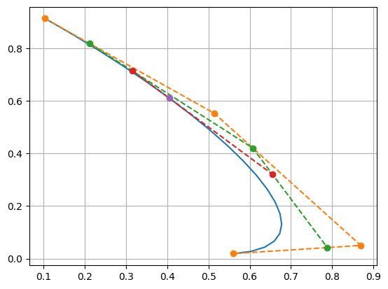
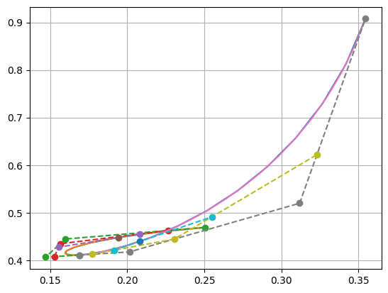

Bezier Curves
Contents
Bezier Curves#
Original Bezier Curves#
import sympy as sp
def get_bezier_polynomial(n):
t, q = sp.symbols('t q')
exprs = [sp.Symbol(f'p_{i}') for i in range(n+1)]
while len(exprs) >= 2:
next_exprs = []
for i in range(len(exprs)-1):
tmp_expr = q * exprs[i] + t * exprs[i+1]
next_exprs.append(tmp_expr.expand())
exprs = next_exprs
return exprs[0].subs(q, 1-t)
get_bezier_polynomial(4)
\[\displaystyle p_{0} \left(1 - t\right)^{4} + 4 p_{1} t \left(1 - t\right)^{3} + 6 p_{2} t^{2} \left(1 - t\right)^{2} + 4 p_{3} t^{3} \cdot \left(1 - t\right) + p_{4} t^{4}\]
def get_bezier_matrix(n):
t = sp.symbols('t')
I = sp.eye(n+1)
matrix_t = sp.Matrix.hstack(*[sp.Matrix([t**i]) for i in range(n+1)])
subs_dict = [(sp.Symbol(f'p_{i}'), I[:, i]) for i in range(n+1)]
bezier_poly = get_bezier_polynomial(n).subs(subs_dict).T
k1 = sp.Matrix.vstack(*[matrix_t.subs(t, i) for i in range(n+1)])
k2 = sp.Matrix.vstack(*[bezier_poly.subs(t, i) for i in range(n+1)])
return k1.inv()*k2
get_bezier_matrix(3)
\[\begin{split}\displaystyle \left[\begin{matrix}1 & 0 & 0 & 0\\-3 & 3 & 0 & 0\\3 & -6 & 3 & 0\\-1 & 3 & -3 & 1\end{matrix}\right]\end{split}\]
Draw Bezier Curves#
import numpy as np
import matplotlib.pyplot as plt
%matplotlib inline
def bezier_2(t, q, p1, p2, p3):
p12 = q * p1 + t * p2
p23 = q * p2 + t * p3
p123 = q * p12 + t * p23
return p123, [p12, p23]
p = np.random.random((3, 2))
t = np.linspace(0, 1, 20).reshape((-1, 1))
curve, p12_23 = bezier_2(t, 1-t, p[0, :], p[1, :], p[2, :])
p12_23 = np.array(p12_23)
plt.plot(curve[:, 0], curve[:, 1])
plt.plot(p[:, 0], p[:, 1], 'o--')
plt.plot(p12_23[:, 5, 0], p12_23[:, 5, 1], 'o--')
plt.plot(curve[5, 0], curve[5, 1], 'o--')
plt.grid()

def bezier_3(t, q, p1, p2, p3, p4):
p123, [p12, p23] = bezier_2(t, q, p1, p2, p3)
p234, [p23, p34] = bezier_2(t, q, p2, p3, p4)
p1234 = q * p123 + t * p234
return p1234, [[p123, p234], [p12, p23, p34]]
def draw_bezier_3(p, verbose=True):
t = np.linspace(0, 1, 20).reshape((-1, 1))
curve, [p123_234, p12_23_34] = bezier_3(t, 1-t, p[0, :], p[1, :], p[2, :], p[3, :])
p123_234 = np.array(p123_234)
p12_23_34 = np.array(p12_23_34)
plt.plot(curve[:, 0], curve[:, 1])
if verbose:
plt.plot(p[:, 0], p[:, 1], 'o--')
plt.plot(p12_23_34[:, 5, 0], p12_23_34[:, 5, 1], 'o--')
plt.plot(p123_234[:, 5, 0], p123_234[:, 5, 1], 'o--')
plt.plot(curve[5, 0], curve[5, 1], 'o--')
plt.grid()
p = np.random.random((4, 2))
draw_bezier_3(p)

Curve Split#
import sympy as sp
def get_split_trans_func(n, verbose=True):
t, z = sp.symbols('t z')
matrix_t = sp.Matrix.hstack(*[sp.Matrix([t**i]) for i in range(n+1)])
k1 = sp.Matrix.vstack(*[matrix_t.subs(t, i) for i in range(n+1)])
bezier_matrix = get_bezier_matrix(n)
left_matrix_tz = sp.Matrix.hstack(*[sp.Matrix([(z*t)**i]) for i in range(n+1)])
k2 = sp.Matrix.vstack(*[left_matrix_tz.subs(t, i) for i in range(n+1)])
left_trans_matrix = bezier_matrix.inv() * k1.inv() * k2 * bezier_matrix
right_matrix_tz = sp.Matrix.hstack(*[sp.Matrix([((1-z)*t + z)**i]) for i in range(n+1)]).expand()
k2 = sp.Matrix.vstack(*[right_matrix_tz.subs(t, i) for i in range(n+1)])
right_trans_matrix = bezier_matrix.inv() * k1.inv() * k2 * bezier_matrix
if verbose:
display(left_trans_matrix, right_trans_matrix)
return sp.utilities.lambdify(z, left_trans_matrix, 'numpy'), sp.utilities.lambdify(z, right_trans_matrix, 'numpy')
left, right = get_split_trans_func(3)
left(0.2)
\[\begin{split}\displaystyle \left[\begin{matrix}1 & 0 & 0 & 0\\1 - z & z & 0 & 0\\z^{2} - 2 z + 1 & - 2 z^{2} + 2 z & z^{2} & 0\\- z^{3} + 3 z^{2} - 3 z + 1 & 3 z^{3} - 6 z^{2} + 3 z & - 3 z^{3} + 3 z^{2} & z^{3}\end{matrix}\right]\end{split}\]
\[\begin{split}\displaystyle \left[\begin{matrix}- z^{3} + 3 z^{2} - 3 z + 1 & 3 z^{3} - 6 z^{2} + 3 z & - 3 z^{3} + 3 z^{2} & z^{3}\\0 & z^{2} - 2 z + 1 & - 2 z^{2} + 2 z & z^{2}\\0 & 0 & 1 - z & z\\0 & 0 & 0 & 1\end{matrix}\right]\end{split}\]
array([[1. , 0. , 0. , 0. ],
[0.8 , 0.2 , 0. , 0. ],
[0.64 , 0.32 , 0.04 , 0. ],
[0.512, 0.384, 0.096, 0.008]])
def get_split_p(n, z, p):
left, right = get_split_trans_func(n, verbose=False)
return left(z) @ p, right(z) @ p
z = 0.4
p = np.random.random((4, 2))
left_p, right_p = get_split_p(3, z, p)
draw_bezier_3(p, verbose=False)
draw_bezier_3(left_p, verbose=True)
draw_bezier_3(right_p, verbose=True)
plt.grid()

Increase-Descrease Dim#
k5 = get_bezier_matrix(5)
k4 = get_bezier_matrix(4)
display(k5, k4)
\[\begin{split}\displaystyle \left[\begin{matrix}1 & 0 & 0 & 0 & 0 & 0\\-5 & 5 & 0 & 0 & 0 & 0\\10 & -20 & 10 & 0 & 0 & 0\\-10 & 30 & -30 & 10 & 0 & 0\\5 & -20 & 30 & -20 & 5 & 0\\-1 & 5 & -10 & 10 & -5 & 1\end{matrix}\right]\end{split}\]
\[\begin{split}\displaystyle \left[\begin{matrix}1 & 0 & 0 & 0 & 0\\-4 & 4 & 0 & 0 & 0\\6 & -12 & 6 & 0 & 0\\-4 & 12 & -12 & 4 & 0\\1 & -4 & 6 & -4 & 1\end{matrix}\right]\end{split}\]